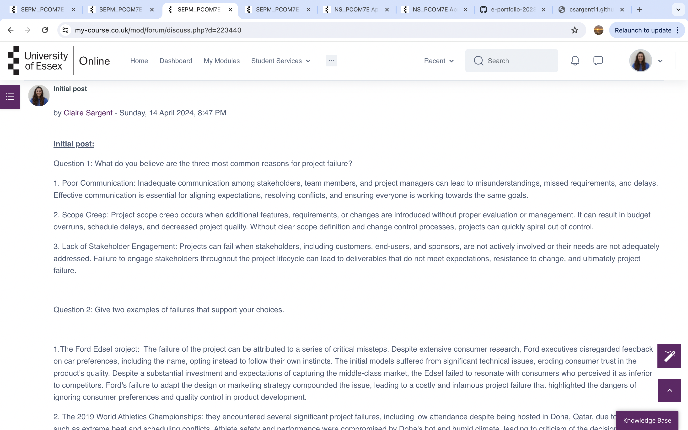
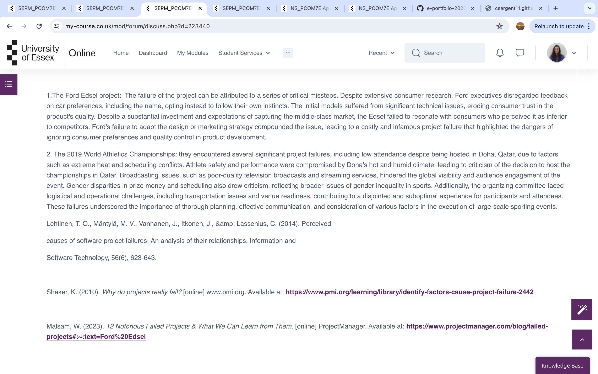
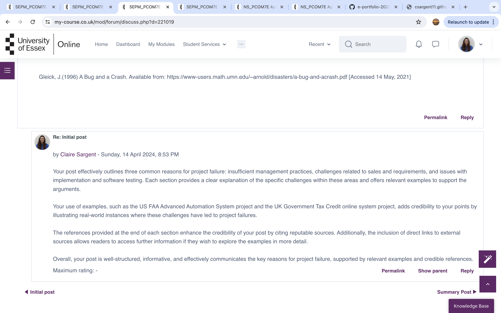
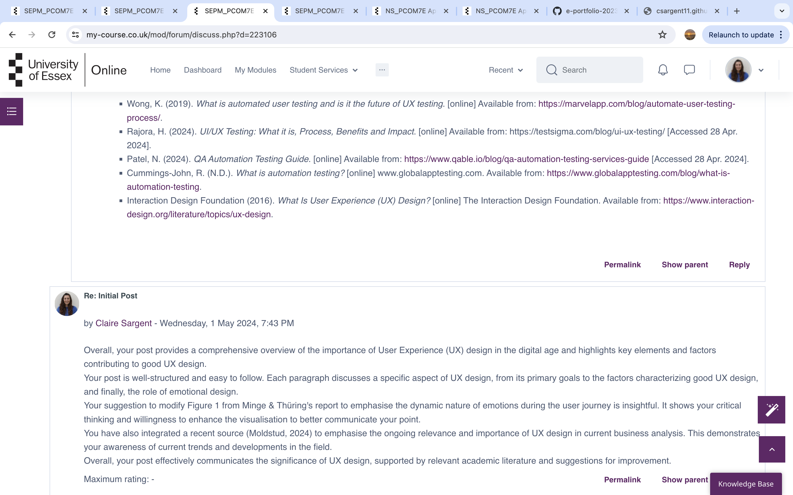
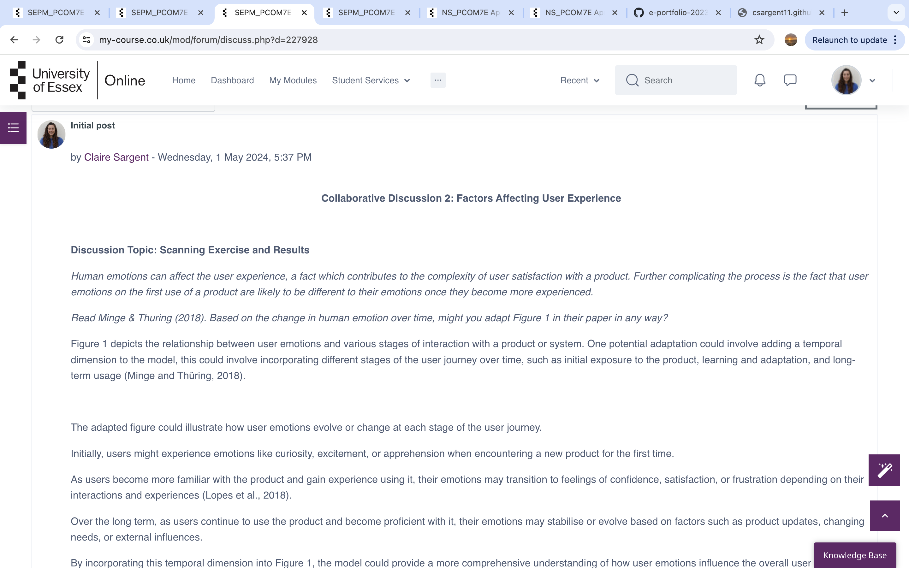
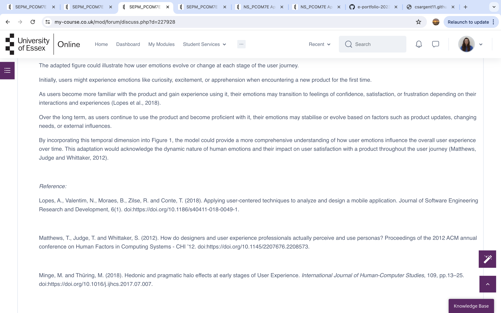
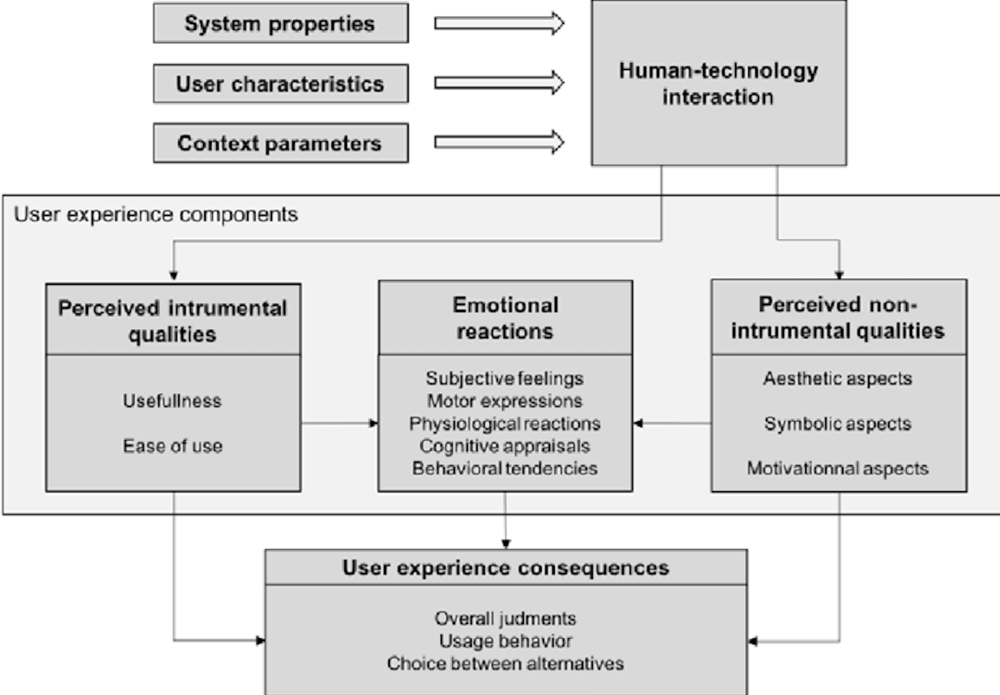
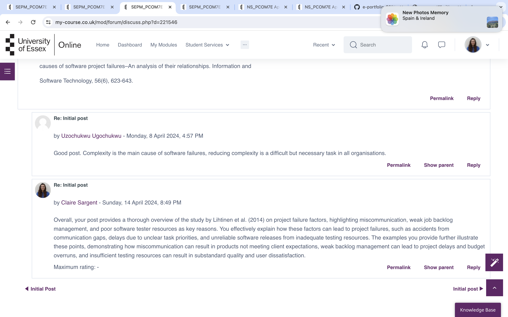
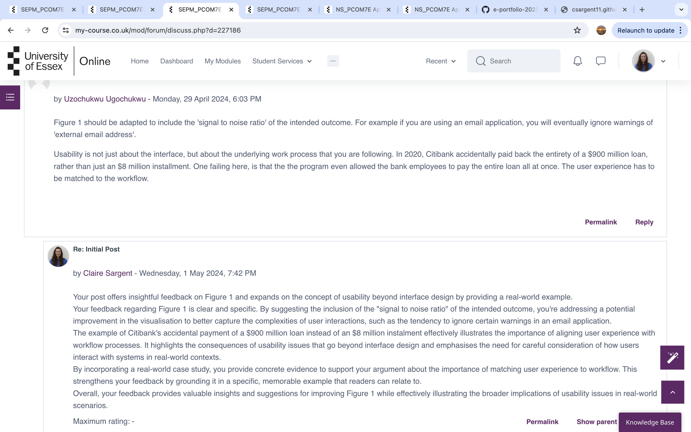

Unit 1: Introduction to Software Engineering Project Management
Discussion post:  Software Engineering Project Management Module 4
Unit 2: Study: Why Projects Fail and Gathering Requirements Exercise
Discussion post reply to peers:  Unit 3: Estimating, Planning and Risk Read Dicheva & Hodge (2018). Think about an online system which you use on a daily basis. Consider how it might operate at the back-end using data structures. This will inform our discussion during next week’s seminar. Let's consider an online shopping platform like Amazon as an example. At the backend, such a system would likely involve several data structures to manage various aspects of the platform: 1. User Authentication and Authorisation: A data structure such as a hash table or a database table would be used to store user credentials (username, password) securely for authentication purposes. Additionally, access control lists (ACLs) could be used to manage user permissions and roles (Silberschatz, 2018). 2. Product cata-log: The product cata-log would require efficient data structures to store information about products, such as their names, descriptions, prices, and availability. A relational database or a document-oriented database could be used to organise this data effectively. 3. User Shopping Cart: When a user adds items to their shopping cart, a data structure like a session object or a temporary database table could be used to store the selected items. This allows users to browse the website without losing their selected items (Korth and Silberschatz, et al. 2010). 4. Order Management: Once a user proceeds to checkout, their order details need to be stored temporarily until the transaction is completed. A data structure like a queue or a stack could be used to manage orders in a first-in-first-out (FIFO) or last-in-first-out (LIFO) fashion (Elmasri and Navathe, 2017). 5. Transaction History: Completed orders and transaction history need to be stored for record-keeping and analytics purposes. A database table or a NoSQL database could be used to store this information efficiently, allowing for easy retrieval and analysis. These are just a few examples of how data structures could be used at the backend of an online system like Amazon. The specific choice of data structures would depend on factors such as the size of the system, performance requirements, and scalability considerations. References: Elmasri, R. and Navathe, S.B., 2017. Fundamentals of Database Systems. 7th ed. Boston: Pearson. Korth, H.F. and Silberschatz, A., 2010. Database System Concepts. 6th ed. New York: McGraw-Hill. Silberschatz, A., Galvin, P.B. and Gagne, G., 2018. Operating System Concepts. 10th ed. Hoboken: Wiley.
Unit 4: Estimating Tools and Risk Assessment Risks and risk mitigation Read the articles by Verner et al (2014) and Anton & Nucu (2020) and then answer the following questions: What are the main risks that the authors identify? How do these fit into the traditional SDLC model? 1. Main Risks Identified by the Authors: The main risks identified by Verner et al (2014) and Anton & Nucu (2020) are common risks in software development projects such as budget overruns, schedule delays, scope creep, inadequate quality assurance, technological obsolescence, and stakeholder miscommunication. 2. Fit into the Traditional SDLC Model: Risks identified by the authors can fit into various phases of the Software Development Life Cycle (SDLC). For example: • Requirements Phase: Risks related to unclear or changing requirements. • Design Phase: Risks associated with poor design decisions or inadequate architecture. • Implementation Phase: Risks of coding errors, integration issues, or resource constraints. • Testing Phase: Risks related to insufficient testing coverage or ineffective test cases. • Deployment Phase: Risks of deployment failures, compatibility issues, or data migration problems. • Maintenance Phase: Risks of software vulnerabilities, performance degradation, or evolving user needs (Anton & Nucu, 2020). Which of the frameworks discussed in the Unit 3 lecturecast would you use to capture and categorise the risks? Frameworks for Capturing and Categorising Risks: In the Unit 3 lecturecast, various risk management frameworks were discussed, including those that are specific to the risk process and others that mention or encompass risk in some way. The key frameworks mentioned are: 1. Open FAIR (Factor Analysis of Information Risk): This framework, produced by The Open Group, provides a standard taxonomy and method for understanding, analysing, and measuring information risk. 2. OCTAVE (Operationally Critical Threat, Asset, and Vulnerability Evaluation): Created at Carnegie Mellon University (CMU) in 1999, the OCTAVE framework focuses on identifying and managing information security risks. It provides a systematic approach to evaluate security risks and develop mitigation strategies (Alberts, et al. 1999). 3. NIST Risk Management Framework (RMF): The National Institute of Standards and Technology (NIST) produces several frameworks that are available for risk management. These frameworks provide guidelines for federal information systems to manage and mitigate risks effectively (NIST. (n.d.). The choice of framework depends on factors such as the project's complexity, industry standards, and organisational preferences. Each framework offers unique methodologies and tools to identify, assess, and mitigate risks in various contexts. Add a risk and a suggested mitigation to the module wiki. Adding a Risk and Suggested Mitigation to the Module Wiki: Risk: Inadequate communication between development teams and stakeholders leading to misunderstandings and rework. Mitigation: Establish regular communication channels, such as weekly meetings or project management tools, to ensure alignment between development teams and stakeholders. Implement requirement management tools to capture and track changes effectively. Encourage active participation from stakeholders in project discussions and reviews to minimise misunderstandings (Verner, et al. 2014). References: Alberts, C.J., Dorofee, A.J., Stevens, J., & Woody, C. (1999). *OCTAVE Framework, Version 1.0: A Risk-Based Approach to Information Security*. Carnegie Mellon University. Anton, D. and Nucu, A., 2020. Risk management in IT projects: An analysis of practices and outcomes. Procedia Computer Science, 176, pp.3609-3616. NIST. (n.d.). Risk Management Framework. [online] Available at: https://www.nist.gov/cyberframework/risk-management-framework Verner, J.M., Sampson, J.C.P., Cerpa, N., Babar, M.A. and Hall, T., 2014. Risk mitigation advice for global software development from systematic literature reviews. IST, 56(9), pp.1143-1152. (Verner, et al. 2014)
Unit 5: User Experience
Discussion post:  Unit 6: pytest and Test-Driven Development
Unit 7: Software Development Life Cycles As a Project Manager, what might be your response to manage the emotional reactions of a customer? You should use at least three academic papers to support your response and write a minimum of 300 words as your response.
 Managing the emotional reactions of customers is a critical aspect of project management, particularly in situations where project delays, budget overruns, or unforeseen issues arise. Addressing these emotional reactions effectively requires a combination of empathy, communication skills, and problem-solving strategies. As a Project Manager, managing the emotional reactions of customers is vital to maintaining positive relationships and ensuring project success. Research suggests several strategies to effectively handle customer emotions and mitigate their impact on the project. Firstly, acknowledging and validating the customer's emotions is essential. According to the study by Grandey et al. (2013), validating emotions involves recognising the customer's feelings as legitimate and expressing empathy towards their concerns. When a customer expresses frustration or disappointment due to project setbacks, acknowledging their emotions demonstrates understanding and builds trust. Secondly, effective communication is key to managing customer emotions. Research by Van Kleef et al. (2015) highlights the importance of transparent and timely communication in reducing negative emotional responses. As a Project Manager, providing regular updates to the customer about project progress, setbacks, and any changes in timelines or deliverables. Clear communication helps manage expectations and minimises misunderstandings that could lead to emotional reactions. Thirdly, offering solutions and demonstrating proactive problem-solving can help alleviate customer concerns. The study by Lazarus and Folkman (1984) on coping strategies suggests that actively addressing problems can reduce stress and emotional distress. In response to customer concerns, presenting potential solutions or mitigation strategies, outlining steps taken to address the issue and prevent similar issues in the future. This proactive approach reassures the customer that their concerns are being addressed and reinforces confidence in the project team's capabilities. In conclusion, managing customer emotions as a Project Manager requires empathy, effective communication, and proactive problem-solving. By acknowledging emotions, maintaining transparent communication, and offering solutions, project managers can mitigate the impact of emotional reactions and foster positive relationships with customers. References: Grandey, A. A., Fisk, G. M., & Steiner, D. D. (2013). Must “service with a smile” be stressful? The moderating role of personal control for American and French employees. *Journal of Applied Psychology, 98*(5), 927–941. Lazarus, R. S., & Folkman, S. (1984). *Stress, Appraisal, and Coping*. New York: Springer Publishing Company. Van Kleef, G. A., De Dreu, C. K., & Manstead, A. S. (2010). An interpersonal approach to emotion in social decision making: The emotions as social information model. *Advances in Experimental Social Psychology, 42*, 45–96.Unit 8: Python Data Structures
Discussion post reply to peers:  Unit 9: Quality Management Strategy
Unit 10: Software Quality Monitoring in Python
Unit 11: Software Engineering Project Management: Future Trends
Unit 12: The Case for the Future Direction of Software Engineering Project Management